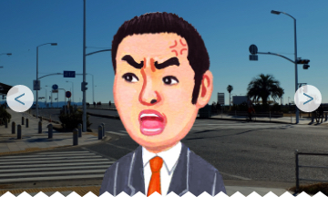
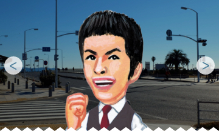
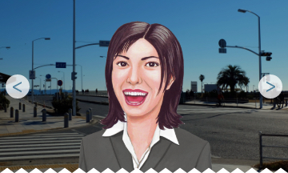

 <!-- Tilt&swingタブ -->
<ons-page>
  <ons-toolbar>
    <div class="left">
      <ons-toolbar-button onclick="prev()">
        <ons-icon icon="md-chevron-left"></ons-icon>
      </ons-toolbar-button>
    </div>
    <div class="white center" style="font-size:0.9rem;">３人から選択してください</div>
    <div class="right">
      <ons-toolbar-button onclick="next()">
        <ons-icon icon="md-chevron-right"></ons-icon>
      </ons-toolbar-button>
    </div>
  </ons-toolbar>

  <ons-carousel fullscreen swipeable auto-scroll overscrollable id="carousel">
    <ons-carousel-item style="background-color: #fff;">
      
      <div class="waku">
      <h2 class="checker_title">鬼教官モード</h2>
      <h4 id="tilt_result_msg" class="result_title">田中ヒロシ<small>教官</small></h4>
      <span id="sleeping-eye-result" class="result_description">厳しい口調で指摘をすることで有名なヒロシ教官！</span>
      </div>
    </ons-carousel-item>
    <ons-carousel-item style="background-color: #fff;">
      
      <div class="space_h30"></div>
      <div class="waku">
      <h2 class="checker_title">コミカル教官モード</h2>
      <h4 id="tilt_result_msg" class="result_title">藤原ヨシヒロ<small>教官</small></h4>
      <span id="sleeping-eye-result" class="result_description">関西出身。元芸人養成所のツッコミ担当を卒業し、自動車教習所の教官へ転身して約10年。軽快なトーク、ツッコミ頻度が多いのが特徴。</span>
      </div>
    </ons-carousel-item>
    <ons-carousel-item style="background-color: #fff;">
      
      <div class="space_h30"></div>
      <div class="waku">
      <h2 class="checker_title">癒し教官モード</h2>
      <h4 id="tilt_result_msg" class="result_title">山口アケミ<small>教官</small></h4>
      <span id="sleeping-eye-result" class="result_description">教官にガツガツ言われると萎縮してしまう。「優しく諭して欲しい！」という方にはピッタリです。
      </span>
      </div>
    </ons-carousel-item>
  </ons-carousel>
  <ons-list>
    <ons-list-item tappable>
      <label class="left">
        <ons-radio name="kyoukan" input-id="radio-1" checked></ons-radio>
      </label>
      <label for="kyoukan-1" class="center">鬼教官モード</label>
    </ons-list-item>
    <ons-list-item tappable>
      <label class="left">
        <ons-radio name="kyoukan" input-id="radio-2"></ons-radio>
      </label>
      <label for="kyoukan-2" class="center">コミカル教官モード</label>
    </ons-list-item>
    <ons-list-item tappable>
      <label class="left">
        <ons-radio name="kyoukan" input-id="radio-3"></ons-radio>
      </label>
      <label for="kyoukan-3" class="center">癒し教官モード</label>
    </ons-list-item>
  </ons-list>
    <div class="space_h10"></div>
    <ons-button name="kyoukan" class="btn_darkblue" onclick="touroku()">アドバイザー登録</ons-button>
    <div class="space_h10"></div>
  </div>
</ons-page>